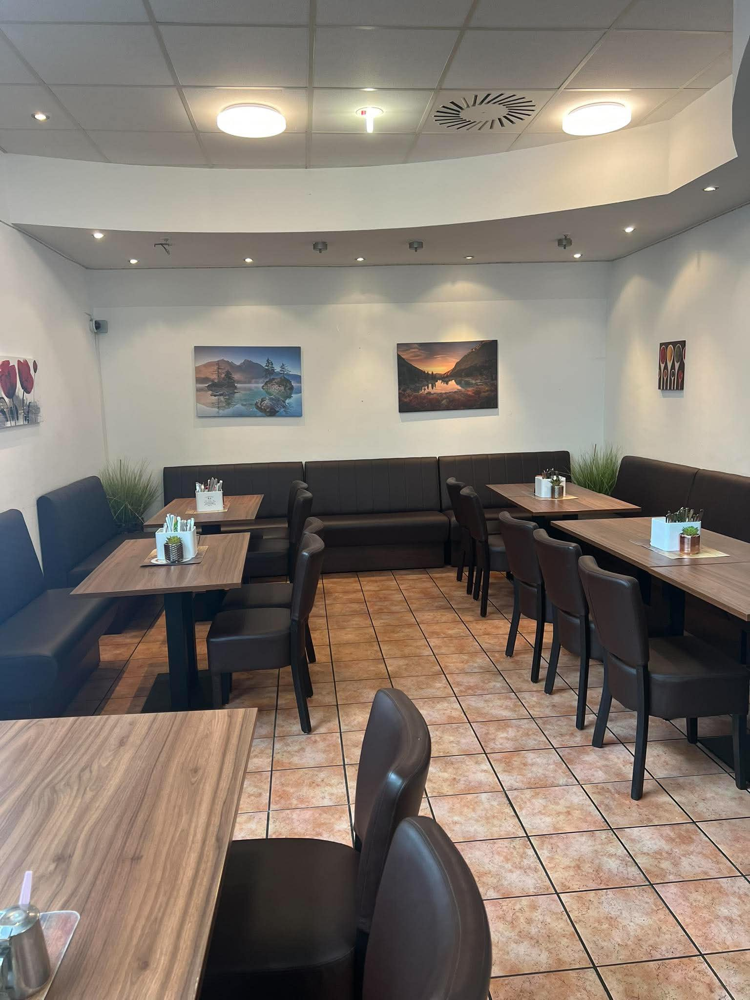
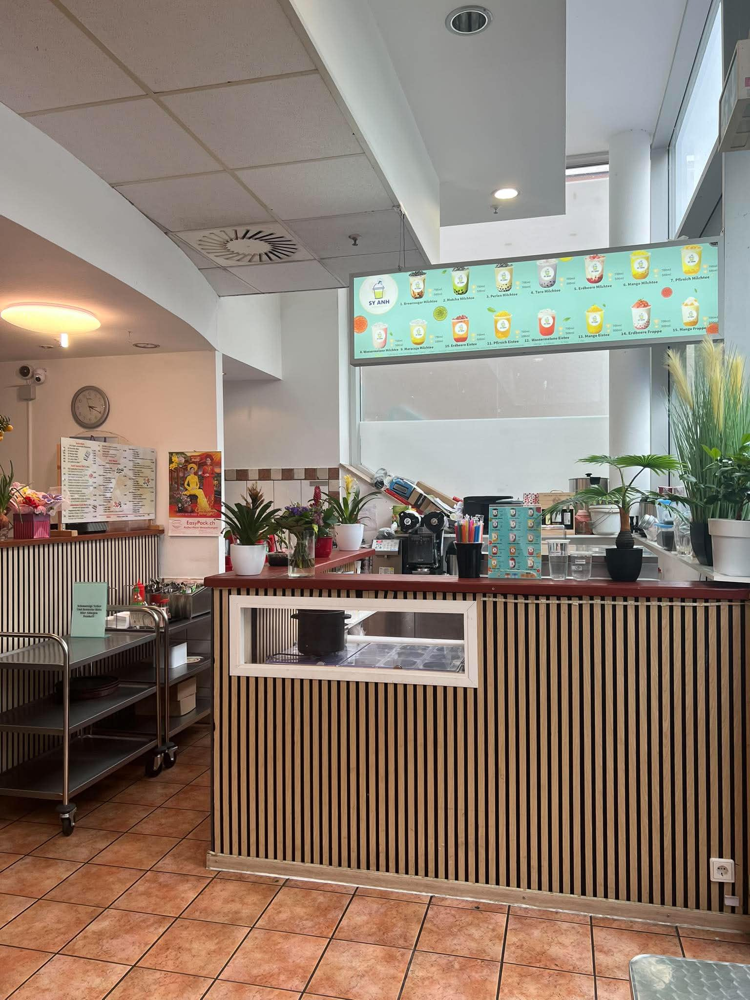
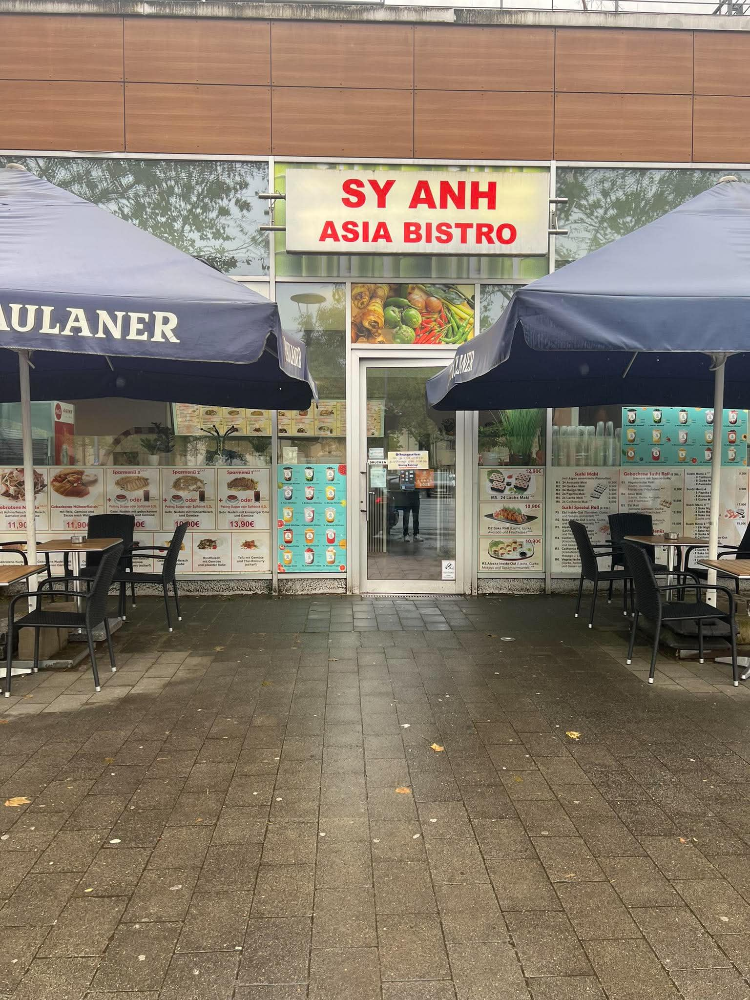
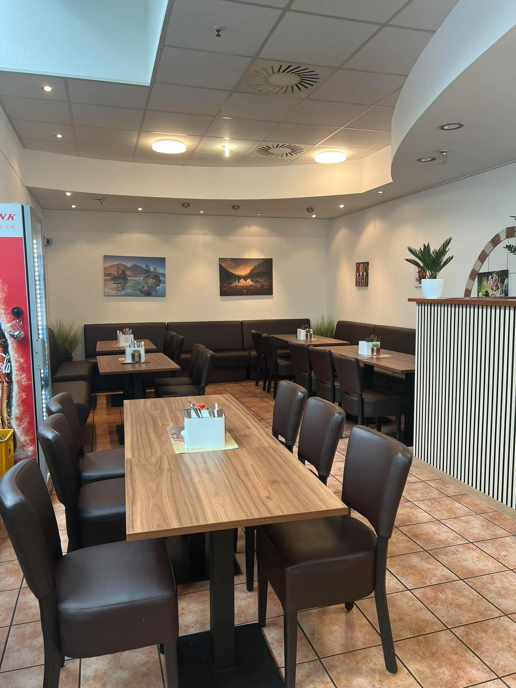

Asiatische Küche mit Stil.
Willkommen bei Sy Anh Asia Bistro in Duisburg-Rheinhausen. Frische asiatische Gerichte, Sushi, Wok-Spezialitäten und gemütlicher Genuss.


0+
Sitzplätze
15€ / 20€
Mindestbestellwert Lieferung
2€
Liefergebühr Rheinhausen & Rumeln

Elegant, gemütlich und direkt neben dem EDEKA-Center.
Sy Anh Asia Bistro verbindet asiatische Küche mit einer modernen, hellen und einladenden Atmosphäre.
Ideal für Mittagessen, Abendessen, Abholung oder Lieferung im Raum Rheinhausen.
Öffnungszeiten & Angebote
Genießen Sie unsere Spezialitäten im Restaurant, zum Mitnehmen oder per Lieferservice.
Öffnungszeiten
Dienstag - Samstag: 11:30 - 21:00
Sonntag & Feiertage: 12:00 - 21:00
Montag: Ruhetag
Lieferservice
Lieferzeiten: 12:00 - 20:30
Lieferung ab 15,00 € +2,00 € innerhalb Rheinhausen.
Lieferung ab 20,00 € +2,00 € nach Rumeln.
Zum Mitnehmen
Bestellen Sie telefonisch und holen Sie Ihr Essen frisch zubereitet im Restaurant ab.

Frisch zubereitet für jeden Geschmack.
Von Sushi Menüs bis knuspriger Ente, Wokgerichten und Box To Go: bei Sy Anh finden Sie asiatische Spezialitäten für jeden Anlass.
Jetzt bestellenBesuchen Sie Sy Anh
Sy Anh Asia Bistro
Adresse
Atroper Str. 9
47226 Duisburg-Rheinhausen
Direkt neben dem EDEKA-Center
Telefon
02065 6 78 78 71
Öffnungszeiten
Dienstag - Samstag: 11:30 - 21:00
Sonntag & Feiertage: 12:00 -
21:00
Montag: Ruhetag